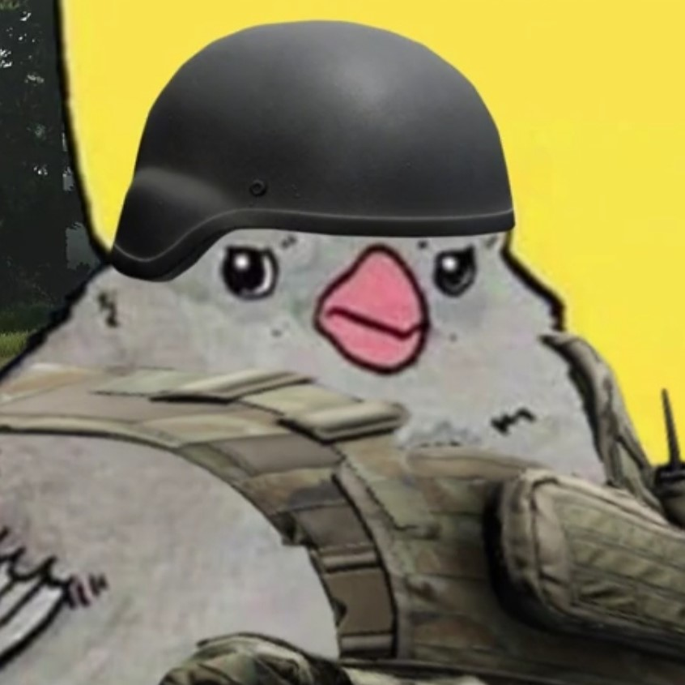

Ingredientes
- 2 xícaras de farinha
- 3/4 xícara de leite
- 1 colher de sobremesa de óleo
- 1 colher de café de sal
Modo de preparo
- Antes de misturar a massa, passe óleo de soja na mão. Sove um pouco.
- Divida massa em 8 bolinhas. Abra as bolinhas no mármore enfarinhado com um rolo.
- Jogue aos poucos a farinha por cima e achate até virar um disco.
- Quanto mais fino o disco, melhor fica.
- Frite em frigideira untada e fogo baixo.
- Depois recheie como desejar.
Quem come comigo é...
Brunão do Migué
O Brunão é uma ótima companhia para experimentar burritos comigo pela primeira vez, isso se ele não der migué para sair com as e-girl dele e sumir.